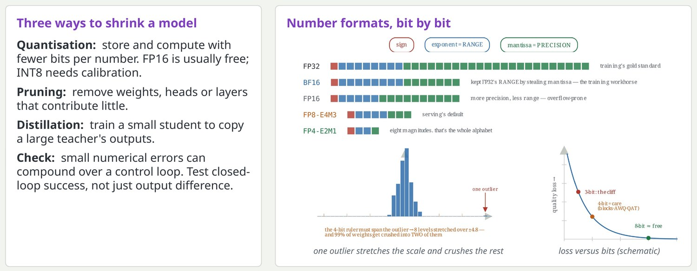
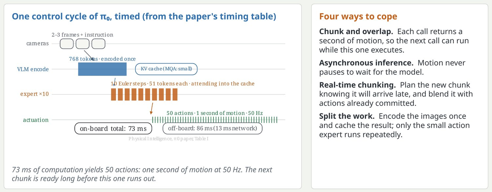
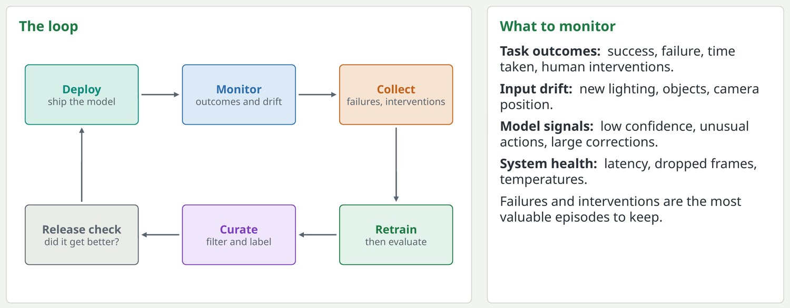

Making the model fit: quantisation, pruning, distillation
A model that needs a data-centre GPU is no use on a battery-powered robot.

FP16 inference is widely supported and usually lossless in practice, though long accumulations and certain normalisation layers need care. INT8 requires representative calibration data to choose the ranges. On robot accelerators, the supported operations and precisions are fixed by the hardware, so check them early. The closed-loop check matters because a tiny per-step error in actions can accumulate over hundreds of steps.
Key pointQuantisation is the first tool to reach for; always re-measure task success afterwards.
The latency budget: answer before the world moves on
The model's answer always arrives late; the design goal is to make that harmless.

The timeline is from my pi-zero video and uses the timing table in the pi-zero paper: images are encoded once into 768 tokens and cached, the action expert then runs ten Euler steps over 51 tokens each, and the result is 50 actions. On-board total is 73 milliseconds; with an off-board GPU it is 86 milliseconds including 13 for the network. Real-time chunking is a later technique for blending a late-arriving chunk into the actions already being executed.
Key pointLatency is a correctness issue: an action computed from an old image is an action for a world that no longer exists.
The data flywheel: the best data comes from deployment
A deployed robot meets situations the training set never covered; capture them and feed them back.

Performance monitoring was the last box of the old pipeline diagram. Today it is the start of the next training cycle. Human interventions are especially useful: the moment an operator takes over marks exactly where the policy was wrong, and the correction is a demonstration of how to recover.
Key pointThe team that turns field failures into training data fastest improves fastest.